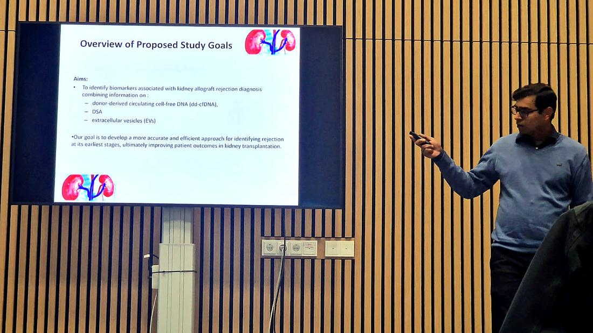
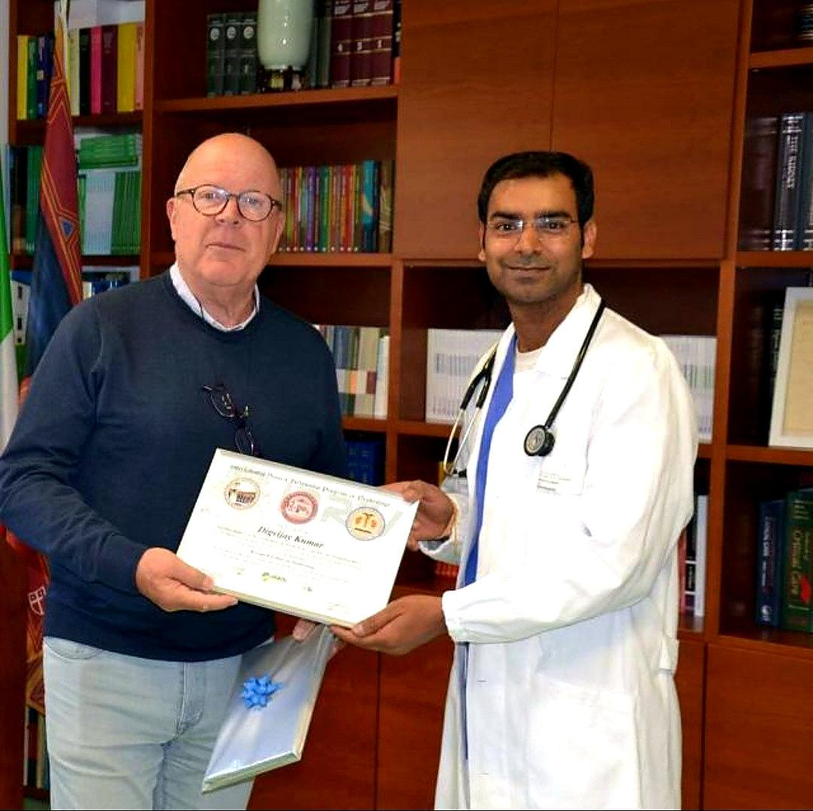

Academic engagement
Gallery
Photographs from research presentations and academic milestones in translational nephrology.


Photographs from research presentations and academic milestones in translational nephrology.

